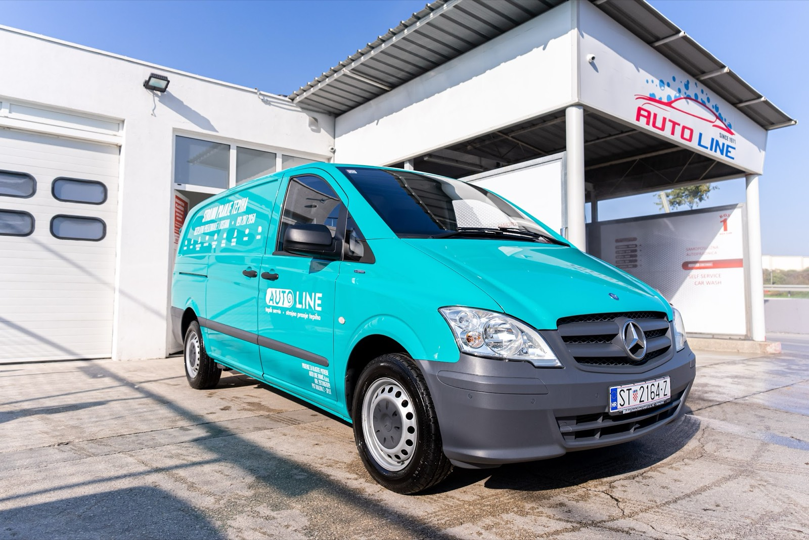
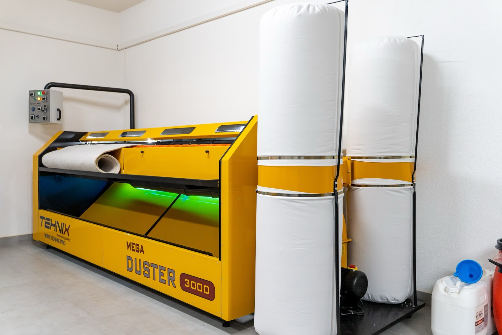
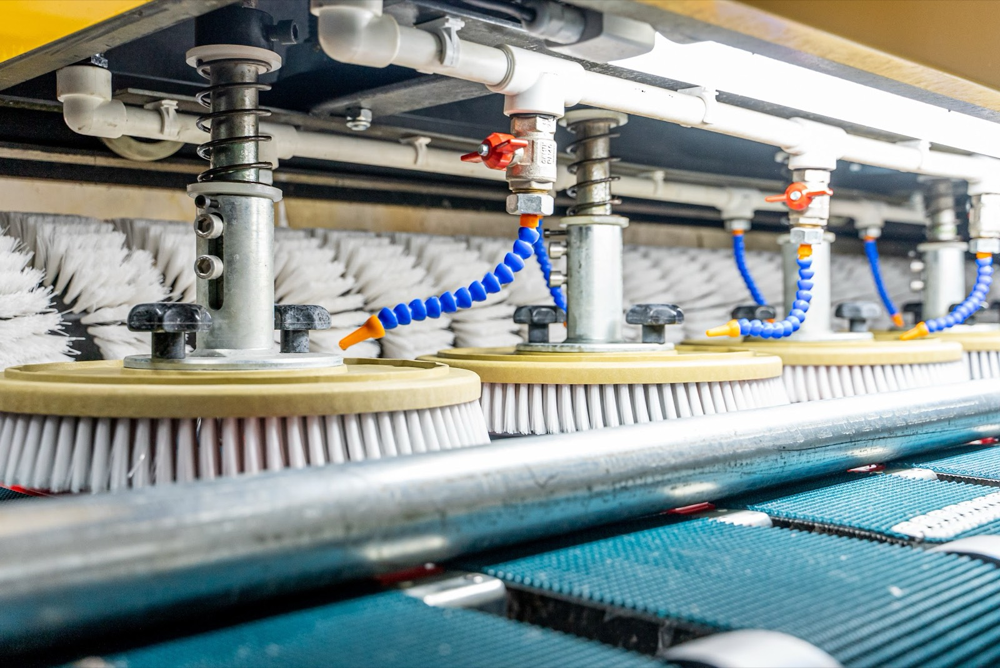
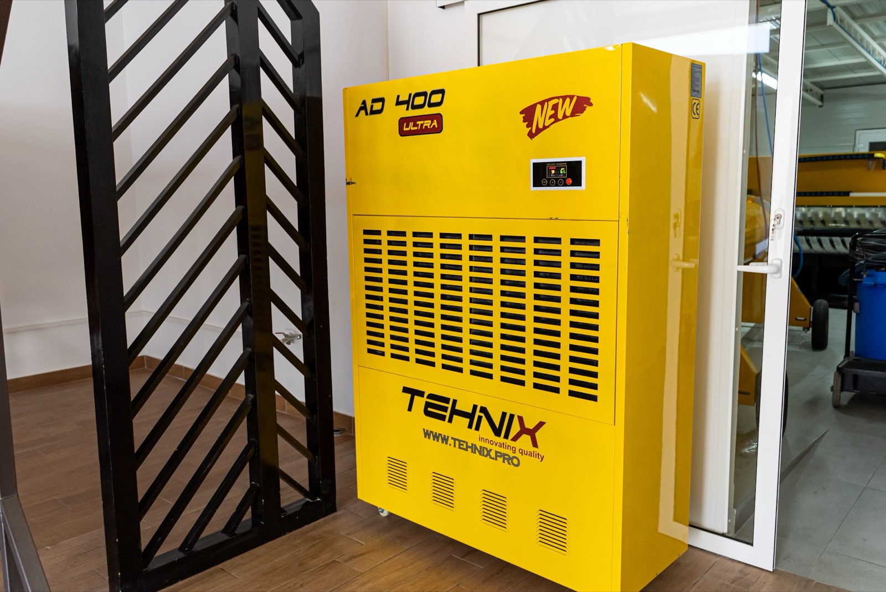

★★★★★
„Od tepiha debelog vunenog pakistanca koji je bio uništen od prijašnjih pranja i od dlaka kućnih ljubimaca: vraćen očišćen, opran, iščetkan bez ostataka ijedne dlake. Vraćen mu onaj stari svilenkasti dodir i izgled.”
ivanka KuzmanicAUTO LINE Tepih servis pere tepihe, tapete i tapecirane stolice u vlastitoj praonici na Put Duilova 2. Dolazimo po tepih na vašu adresu, peremo ga strojno, sušimo i vraćamo zamotanog u foliju.

Tepisi stižu u praonicu s prašinom, dlakama i mrljama koje usisavač ne izvlači. Strojno pranje s četkama dopire do dna vlakna – a sve se vraća čisto i mirisno.
Sobni tepisi, staze i tapeti svih veličina – pranje, centrifuga, sušenje i pakiranje u foliju.
„Tapet je čist ka suza i baš svježe izgleda.” – Marko M.Shaggy tepisi s dugim vlaknom, u kojima se najviše skuplja prašina i dlaka.
„Opet izgleda isto kao prvi dan.” – igorsplitDebeli vuneni tepisi („pakistanci”) – pranje i četkanje dok ne vrati svoj meki dodir.
„Vraćen mu onaj stari svilenkasti dodir.” – ivanka K.Sjedala stolica s mrljama koje se godinama skupljaju – uz tepihe, u istom dolasku.
„Fleke stare nekoliko godina.” – Ivana MRPraonica je opremljena strojevima Tehnix: od otprašivača i stroja s četkama do centrifuge i odvlaživača. Pogledajte postupak i opremu →

Dolazimo po tepih na vašu adresu u dogovoreno vrijeme.

Stroj izbija suhu prašinu i pijesak prije pranja.

Rotirajuće četke peru tepih vodom i sredstvom, cijelom površinom.

Namotani tepih centrifugira se da izgubi što više vode.

Tepih se suši u zatvorenom prostoru uz industrijski odvlaživač.

Zamotan u foliju, vraćamo ga na vašu adresu.

Nazvala sam preko 10 praonica u Splitu i bližoj okolici, ali nitko nije mogao doći na našu adresu. U Tepih servisu Auto Line su mogli u razumnom vremenu i to s najpovoljnijom cijenom usluge. Tako se radi!
Iva Meštrović · recenzija na Googleu
Što kažu ljudi kojima smo prali tepihe – izvadci iz recenzija s Google profila AUTO LINE Tepih servisa.
„Od tepiha debelog vunenog pakistanca koji je bio uništen od prijašnjih pranja i od dlaka kućnih ljubimaca: vraćen očišćen, opran, iščetkan bez ostataka ijedne dlake. Vraćen mu onaj stari svilenkasti dodir i izgled.”
ivanka Kuzmanic„Moj čupavi tepih od 2 × 3 m nakon pranja opet izgleda isto kao prvi dan kad sam ga kupio. Apsolutno preporučujem ovu firmu svima!”
igorsplit„Prvorazredna usluga pranja tepiha. Dolazak na adresu, pranje i povratak tepiha, sve u najkraćem roku. Preporuka svima!”
Danijela Pisac„Brzo i profesionalno očišćeni tepisi i tapecirane stolice (fleke stare nekoliko godina). Prezadovoljna sam, preporuke svima!”
Ivana MR„Tapeti su mi kao novi. Momak koji mi ih je dostavio pristojan, komunikativan te simpatičan. Kad sam tapete raspakirala, cijela kuća mi je mirisala danima.”
Đana Zna„Uslužni, profesionalni. Zadovoljna opranim tepihom. Uspjeli su skinuti i fleku od kave.”
Sanja ViskovicIzvor: Google recenzije, profil „AUTO LINE Tepih servis” (studeni 2026.). Sve recenzije →
Ispunite nekoliko polja i pripremit ćemo vam SMS s upitom – samo ga pošaljete. Javit ćemo vam se da dogovorimo dolazak po tepih.
091 207 2050Pon – pet, 8 – 16 h · Put Duilova 2, Split
Da. Dogovorite termin telefonom ili SMS-om, a mi dolazimo po tepih na vašu adresu i nakon pranja ga vraćamo. Možete ga i sami donijeti u praonicu na Put Duilova 2 radnim danom od 8 do 16 sati – javite se prije dolaska.
Tepihe i tapete svih vrsta – od tankih staza do čupavih (shaggy) i debelih vunenih ručno tkanih tepiha – te tapecirane stolice. Za nešto neobično nazovite pa ćemo vam reći može li se prati strojno.
Ovisi o vrsti i debljini tepiha i o sušenju. Točan rok dogovaramo pri preuzimanju, a tepih vam vraćamo u dogovoreno vrijeme.
Strojno pranje s četkama izvlači dlake i prašinu iz dubine tepiha, a mnoge mrlje (npr. od kave) skidaju se pranjem. Za vrlo stare mrlje ne možemo unaprijed jamčiti – recite nam o čemu je riječ kad naručujete.
Opran, osušen i zamotan u foliju, spreman za polaganje.
Praonica tepiha nalazi se na istoj adresi kao samoposlužna autopraonica AUTO LINE.